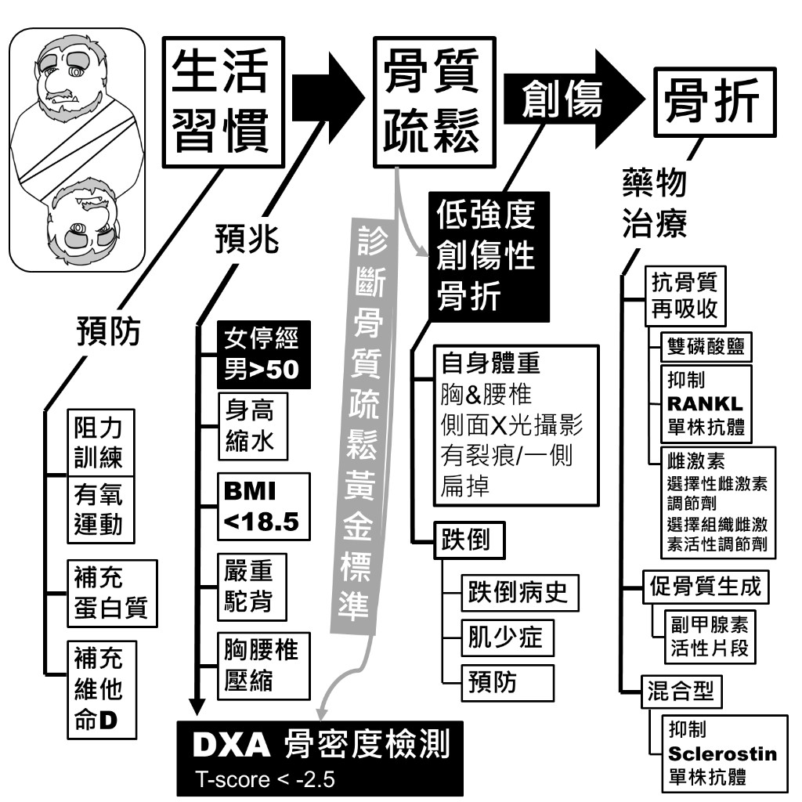
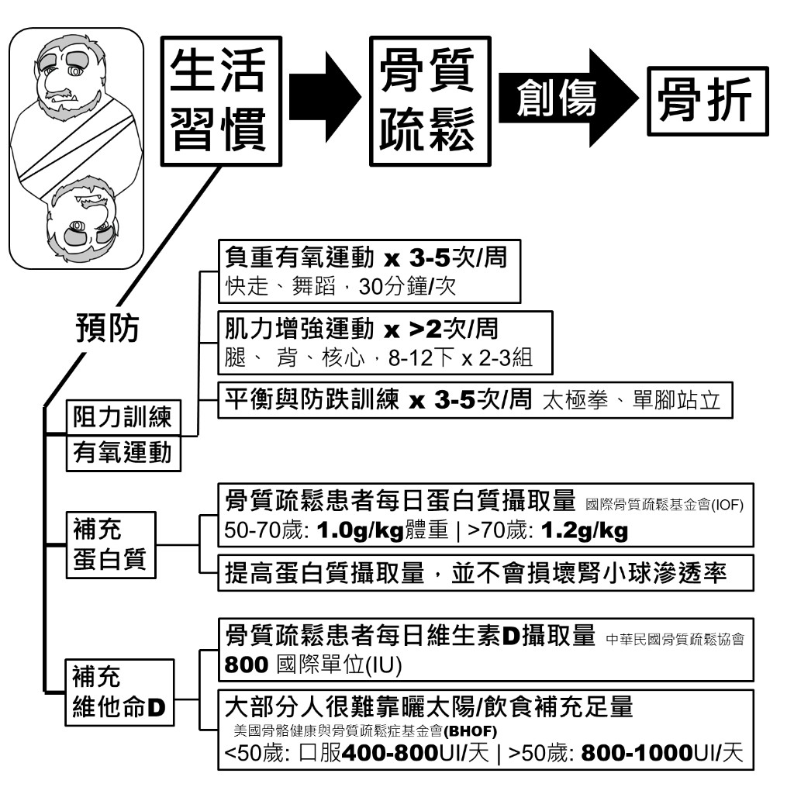
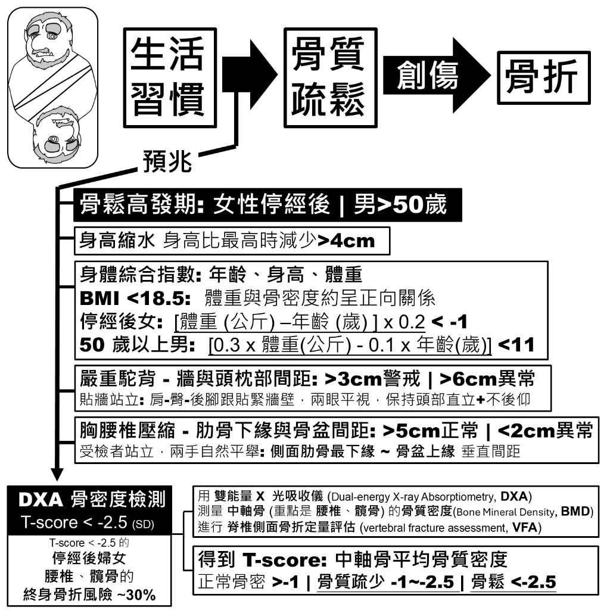
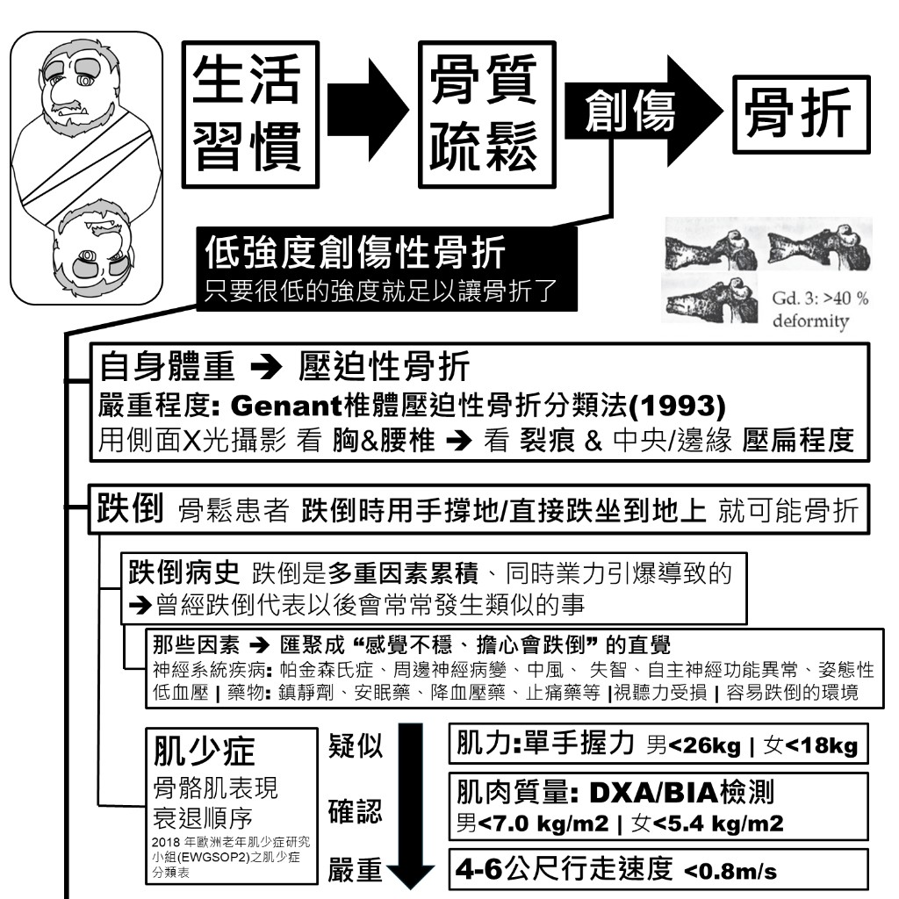
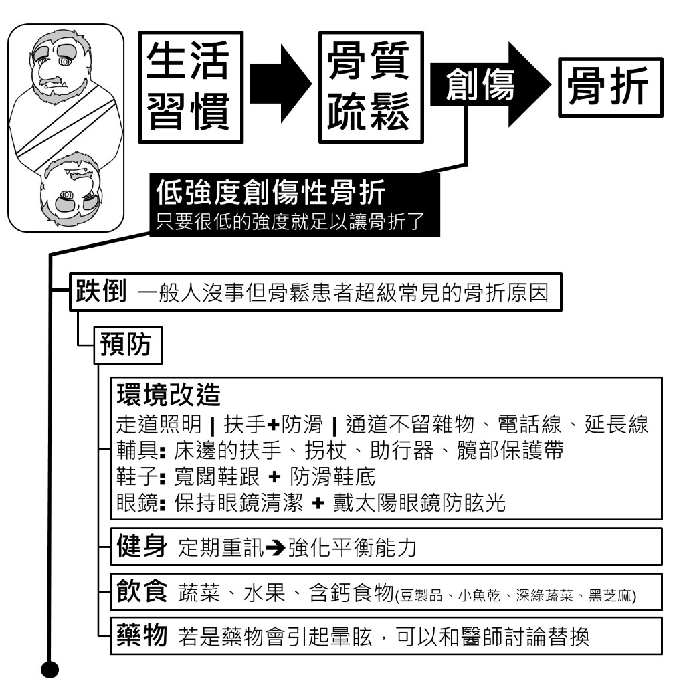
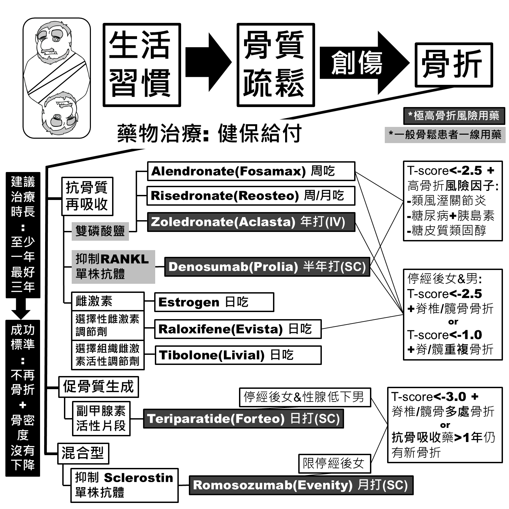
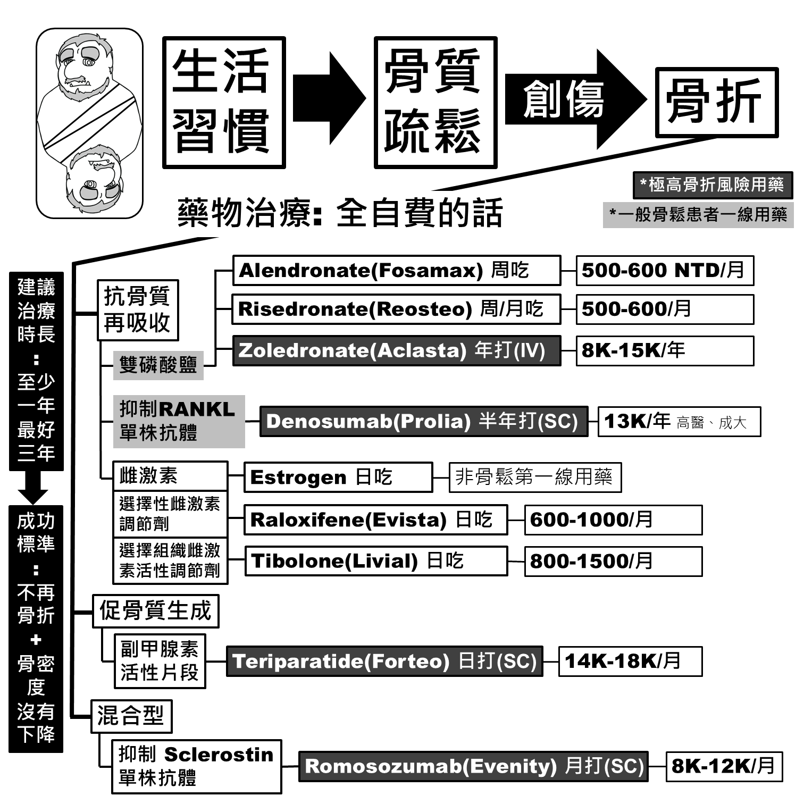

總覽：從生活習慣到骨折
骨質疏鬆的發展路徑：生活習慣 → 骨質疏鬆 →（創傷）→ 骨折。預防從生活習慣著手；出現預兆時做 DXA 檢測；已骨折或高風險者則需藥物治療。

預防
從運動、蛋白質與維他命 D 三方面著手，可以減緩骨密度流失。

阻力訓練與有氧運動
| 類型 | 頻率 | 內容 |
|---|---|---|
| 負重有氧運動 | 3–5 次／週 | 快走、舞蹈，30 分鐘／次 |
| 肌力增強運動 | > 2 次／週 | 腿、背、核心，8–12 下 × 2–3 組 |
| 平衡與防跌訓練 | 3–5 次／週 | 太極拳、單腳站立 |
補充蛋白質
骨質疏鬆患者每日蛋白質攝取量（國際骨質疏鬆基金會 IOF）：
- 50–70 歲：1.0 g／kg 體重
- > 70 歲：1.2 g／kg 體重
提高蛋白質攝取量，並不會損壞腎小球滲透率。
補充維他命 D
- 中華民國骨質疏鬆協會：骨質疏鬆患者每日 800 IU
- 美國骨骼健康與骨質疏鬆症基金會（BHOF）：大部分人很難靠曬太陽／飲食補充足量
- < 50 歲：口服 400–800 IU／天
- > 50 歲：800–1000 IU／天
預兆與診斷
出現以下預兆時，建議安排 DXA 骨密度檢測。DXA 是診斷骨質疏鬆的黃金標準。

預兆
- 骨鬆高發期：女性停經後｜男性 > 50 歲
- 身高縮水：身高比最高時減少 > 4 cm
- BMI < 18.5：體重與骨密度大致呈正相關
- 停經後女性：[體重(kg) − 年齡(歲)] × 0.2 < −1
- 50 歲以上男性：[0.3 × 體重(kg) − 0.1 × 年齡(歲)] < 11
- 嚴重駝背（枕壁距）：背靠牆、肩臀跟貼牆、目視前方不後仰 → 警戒 > 3 cm｜異常 > 6 cm
- 胸腰椎壓縮（肋緣–骨盆距）：雙手自然上舉，量側肋緣最低緣至骨盆上緣垂直距 → 正常 > 5 cm｜異常 < 2 cm
DXA 骨密度檢測
使用雙能量 X 光吸收儀（DXA）測量中軸骨（腰椎、髖部）的骨礦物密度（BMD），並可做椎體骨折評估（VFA）。
| T-score | 分類 |
|---|---|
| > −1 | 正常骨密 |
| −1 至 −2.5 | 骨質疏少 |
| < −2.5 | 骨質疏鬆（診斷標準） |
停經後女性 T-score < −2.5 時，終生脊椎或髖部骨折風險約 30%。
低強度創傷性骨折
骨質疏鬆患者的骨折常來自「低強度創傷」: 跌倒時手撐地可能手腕骨折；跌坐在地上可能髖骨骨折；甚至是自身體重都能造成壓迫性骨折。

自身體重
- 自身體重 → 壓迫性骨折：嚴重程度依 Genant 椎體壓迫性骨折分類法（1993）
- 評估方式：胸＆腰椎側面 X 光 → 看裂痕與中央／邊緣壓扁程度
- Genant 椎體壓迫性骨折分類法 — Radiopaedia
- Genant 半定量視覺分級示意圖 — ResearchGate
跌倒
一般人沒事，但骨鬆患者跌倒時用手撐地或直接跌坐到地上，就可能骨折。跌倒往往是多種因素累積的結果，有跌倒病史是再次跌倒的預測因子。
常見危險因子（讓人直覺「站不穩、怕跌倒」）：
- 神經系統疾病：帕金森氏症、周邊神經病變、中風、失智、自律神經失調、姿位性低血壓
- 藥物：鎮靜劑、安眠藥、降血壓藥、止痛藥等
- 其他：視力／聽力障礙、容易跌倒的環境
肌少症:容易引起跌倒（EWGSOP2, 2018）
骨骼肌表現衰退順序：
| 程度 | 項目 | 標準 |
|---|---|---|
| 疑似 | 肌力（單手握力） | 男 < 26 kg 女 < 18 kg |
| 確認 | 肌肉質量（DXA/BIA） | 男 < 7.0 kg/m² 女 < 5.4 kg/m² |
| 嚴重 | 身體機能（4–6 公尺行走速度） | < 0.8 m/s |
DXA 與 BIA：肌肉量怎麼測？
肌少症診斷中的「肌肉質量」可用 DXA 或 BIA 測量，兩者原理與適用場合不同。以下整理自 放射醫傑克：BIA vs. DXA 比較：
| 項目 | BIA（生物電阻抗） | DXA（雙能量 X 光吸收儀） |
|---|---|---|
| 常見場所 | 健身中心、減重門診的體脂計／身體組成分析儀 | 醫院放射科（少數高階健檢中心或診所） |
| 可測項目 | 體脂肪、肌肉量 | 骨質密度、體脂肪、肌肉量（依機型；部分 DXA 僅能測骨密，建議先電話確認） |
| 輻射 | 無 | 極微量 |
| 檢測時間 | 短 | 約 5–10 分鐘 |
| 精確度 | 受體內含水量影響，結果波動較大 | 較 BIA 精確 |
| 健保給付 | — | 骨密檢查有健保條件；以 DXA 測體脂或肌肉量通常需自費 |
適合檢測對象：
- BIA：一般民眾初步了解身體組成
- DXA：需要較精確身體組成者；有中老年人骨密度檢測需求者；醫師評估須以 DXA 做檢測者
跌倒預防
跌倒是一般人沒事、但骨鬆患者超級常見的骨折原因。可從環境、運動、飲食與用藥四方面預防。

環境改造
- 走道照明｜扶手＋防滑｜通道不留雜物、電話線、延長線
- 輔具：床邊扶手、拐杖、助行器、髖部保護帶
- 鞋子：寬闊鞋跟＋防滑鞋底
- 眼鏡：保持清潔＋戴太陽眼鏡防眩光
健身
定期重訓 → 強化平衡能力
飲食
蔬菜、水果、含鈣食物（豆製品、小魚乾、深綠蔬菜、黑芝麻）
藥物
若服用的藥物會引起暈眩，可以和醫師討論替換
藥物治療：健保給付
以下為健保給付規定之簡化整理，實際用藥與給付資格請以健保署最新公告及醫師評估為準。

健保給付藥品
| 分類 | 成分（商品名範例） |
|---|---|
| 雙磷酸鹽 | alendronate（福善美）、zoledronate 5 mg（骨力強）、risedronate（瑞骨卓）、ibandronate 3 mg（骨維壯） |
| SERM | raloxifene（鈣穩）、bazedoxifene（Viviant） |
| RANKL 單株抗體 | denosumab（寶骼麗） |
| 副甲狀腺素及類似劑 | teriparatide（骨穩、艾歐骨得） |
| Sclerostin 抑制劑 | romosozumab（益穩挺） |
抗骨質再吸收藥物：給付條件
適用對象：以停經後婦女為主；alendronate、zoledronate、denosumab 及 risedronate 35 mg 亦可用於男性（risedronate 150 mg 不可用於男性）。
條件Ⅰ — 因骨鬆／骨少引起骨折
- 骨質疏鬆症（DXA：T-score ≤ −2.5）＋ 脊椎或髖部骨折
- 骨質疏少症（−2.5 < T-score < −1.0）＋ 脊椎或髖部 2 處或 2 次（含）以上骨折
- Prolia、Alendronate Sandoz 70 mg 另可給付：上述骨鬆／骨少引起之遠端橈骨或近端肱骨骨折（含 2 處或 2 次以上）
條件Ⅱ — 高骨折風險因子（限 Prolia、Alendronate Sandoz 70 mg，須病歷載明）
- DXA：T-score ≤ −2.5，且合併以下至少一項：類風溼性關節炎｜糖尿病且使用胰島素｜糖皮質類固醇 > 5 mg／天超過 3 個月
共通使用規定
- 治療期間一次限用一項骨鬆藥物，不得併用其他骨鬆治療藥
- 使用雙磷酸鹽前，須檢測血清 creatinine，並符合仿單規定
促骨質生成藥物（Teriparatide）：給付條件
- 對象：停經後骨鬆婦女；或原發性／次發性腺功能低下之骨鬆男性
- 條件（須病歷載明）：DXA T-score ≤ −3.0；或脊椎／髖部 > 2 處骨折，且無法耐受副作用，或抗骨吸收劑連續使用 ≥ 12 個月仍發生至少 1 處新骨折
- 用量：不得超過 18 支，2 年內使用完畢；期間不得併用其他骨鬆藥
- 與 romosozumab 僅得擇一，除耐受性不良外不得互換
混合型藥物（Romosozumab）：給付條件
- 對象：限停經後骨鬆婦女
- 條件（須病歷載明）：DXA T-score ≤ −3.0；或遠端橈骨、近端肱骨、脊椎或髖部 ≥ 2 處骨折，且無法耐受副作用，或抗骨吸收劑連續使用 ≥ 12 個月仍發生至少 1 處新骨折
- 用量：不得超過 24 支，1 年內使用完畢；期間不得併用其他骨鬆藥
- 與 teriparatide 僅得擇一，除耐受性不良外不得互換
最新給付規定與用藥注意事項，可參考：
藥物治療：全自費參考
若不符合健保給付條件，以下為全自費的市場行情區間，實際價格因地區與院所而異。

| 分類 | 藥物 | 用法 | 自費參考 |
|---|---|---|---|
| 雙磷酸鹽 | Alendronate (Fosamax) | 週吃 | 500–600 元／月 |
| Risedronate (Reosteo) | 週／月吃 | 500–600 元／月 | |
| Zoledronate (Aclasta) | 年打 IV | 8K–15K 元／年 | |
| RANKL 抑制劑 | Denosumab (Prolia) | 半年打 SC | 約 13K 元／年 |
| 雌激素 | Estrogen | 日吃 | 非 骨鬆 第一線用藥 |
| 選擇性雌激素調節劑 (SERM) | Raloxifene (Evista) | 日吃 | 600–1000 元／月 |
| 選擇組織雌激素活性調節劑 (STEAR) | Tibolone (Livial) | 日吃 | 800–1500 元／月 |
| 促骨質生成 | Teriparatide (Forteo) | 日打 SC | 14K–18K 元／月 |
| 混合型 | Romosozumab (Evenity) | 月打 SC | 8K–12K 元／月 |
使用抗骨質疏鬆藥物後，侵入性牙科治療與顎骨壞死（MRONJ）
- 機率很低：用來治療骨鬆的藥物，在侵入性牙科治療後引起顎骨壞死（MRONJ）的機率非常低，都在 1% 左右。可參考 亞洲骨鬆協會 Asian Federation of Osteoporosis Societies（AFOS）的統計與共識報告。
- 多數可痊癒：大部分的案例都是在吃抗生素、把傷口清乾淨以後可以痊癒的，不用這麼擔心。下面是 美國口腔外科學會 American Association of Oral and Maxillofacial Surgeons（AAOMS）發表的 MRONJ 治療建議。
- 事前牙科評估：如果真的顧慮，可以在吃藥之前先去看牙醫，把高機率留不下來的牙齒先處理好，再進入療程 :)
參考資料
本頁整理自原簡報與以下公開資源，詳細內容請以原文為準。
官方指引
- 2025 台灣成人骨質疏鬆症防治之共識及指引（PDF） — 中華民國骨質疏鬆症學會